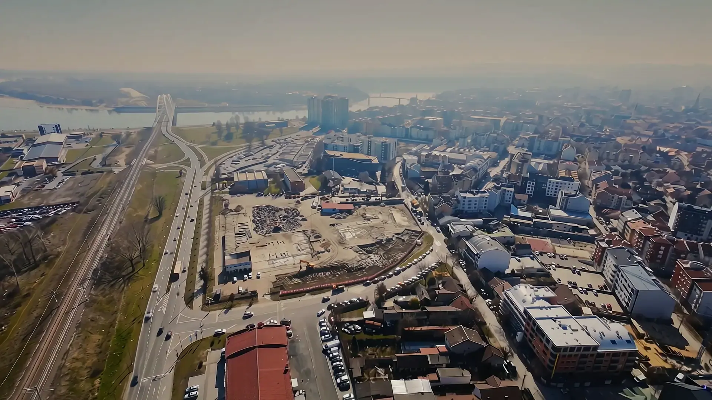

Pet tipova stanova — od garsonjera do ekskluzivnih — na 14 spratova, iznad dve podzemne etaže parkinga i deset hiljada kvadrata zajedničkog dvorišta. Kao nekad: gradi se sa pažnjom na kvalitet.
Dečje igralište u dvorištu, vrtić u sklopu kompleksa — a tri škole i dva vrtića na 500 m.
Vežbanje u dvorištu, dve biciklističke staze uz sam kompleks.
21 poslovni prostor u prizemlju — lokali, restoran, kafić.
Grejanje, klima i kontrola pristupa — sa telefona.
Zidovi od 33 cm između stanova. Troslojni hrastov parket, granitna keramika, aluminijumska stolarija.
Dve podzemne etaže — auto sklonjen sa ulice, ti na dva minuta od stana.
Podbara, Novi Sad — na potezu između Dunava i centra grada. Tri škole i dva vrtića na 500 metara. Žeželjev most na dohvat ruke.
Futoška 80, Novi Sad · +381 62 600 900
Izaberi svoj stan →